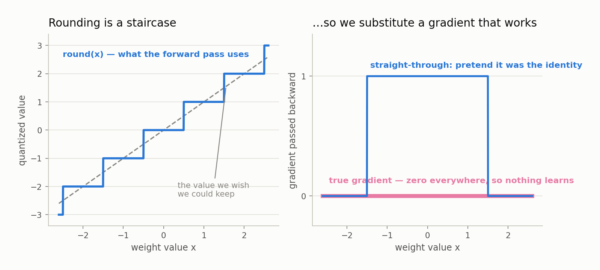

Chapter 7 — Training in Low Precision#
After this chapter you will understand why rounding a weight destroys the gradient signal learning depends on, and how three lines of arithmetic restore it. You will be able to read the quantizers LOGOS implements — ternary weights, 2/3/4-bit integers with learned per-group scales, 8-bit activations — and say what each stores and what each discards. You will also meet the first real experimental result in this book.
The problem we inherited from Chapter 6#
Chapter 6 ended on a cliff: squeezing a finished 16-bit model down to 2 bits falls apart, because the model never had a chance to arrange itself around the coarse grid it would be forced onto. The fix is to make the model low-precision while it learns. This is quantization-aware training, or QAT: the model sees its own rounding error on every forward pass and adapts to it. Obvious, and immediately blocked, because training needs gradients and rounding does not have useful ones.
Why a zero gradient stops learning dead#
Gradient descent nudges each weight in the direction that reduces the loss, by an amount proportional to the gradient, the derivative of the loss with respect to that weight. No derivative, no nudge.
Now look at round(x). For any x between 0.5 and 1.5 it returns exactly 1.0, so moving x from 0.7 to 0.9 changes nothing and the derivative is zero. It is zero everywhere except the knife-edge points at 0.5, 1.5, 2.5, where no derivative exists at all. Chain that into backpropagation and everything upstream dies: the gradient reaching a weight is a product of derivatives, one zero zeroes the whole product, and every weight in the layer would be updated by exactly zero, forever.

Fake quantization: keep a full-precision master#
The first half of the solution is to refuse to throw the precision away during training. Every quantized layer keeps a master weight: an ordinary full-precision tensor that the optimizer owns and updates. On each forward pass the layer quantizes a copy, multiplies with the coarse copy, and leaves the master untouched, so the update lands on the master. This is fake quantization — the arithmetic is genuinely coarse, the storage behind it is not.
Why keep the master? Because the updates are tiny. One step at a learning rate near 3e-3 moves a weight by roughly a thousandth of its own size, and rounding after every step erases that thousandth every time, freezing the weight on whichever level it started on. The master is an accumulator: it collects thousands of sub-threshold nudges until their sum pushes the weight across a rounding boundary, at which point the quantized value flips.
The straight-through estimator#
The master solves storage, not the gradient. The straight-through estimator, or STE, is as brazen as its name: on the backward pass, pretend the rounding never happened. Compute forward with the rounded value, then differentiate as if the operation had been the identity y = x, whose derivative is a clean 1. That is a lie about the mathematics, and worth being clear-eyed about — the true gradient is zero and useless, so the STE substitutes a surrogate that agrees with the quantizer on average. It is empirical rather than derived, and it is what BitNet and ParetoQ use.
Reading the idiom#
The entire implementation, from src/logos/quant/ste.py:
def ste_round(x): return x + (torch.round(x) - x).detach()
The trick is .detach(), which tells autodiff to treat a tensor as a constant: its value participates in the arithmetic, no gradient flows back through it.
Forward: detach changes no values, so the expression is x + (round(x) − x) = round(x). The x terms cancel and the layer gets the rounded number. Backward: the bracketed term is a constant with derivative zero, so what remains is the derivative of the leading x, which is 1. One expression that evaluates like the staircase and differentiates like the diagonal — the bottom panel of the figure above, made concrete.
Ternary weights use a stronger version, ste_round_clip, which clamps to the representable interval before rounding and does not detach the clamp, so the gradient is 1 inside the interval and 0 outside. That zero is correct rather than a defect: a scaled weight already pinned at the top level cannot change the output by moving further out, so pressure on it would only inflate a master that can never walk back.
Ternary weights: BitNet b1.58 as implemented here#
The most aggressive arm restricts every weight in the model body to three values: negative, zero, positive. This is the BitNet b1.58 recipe, six lines in src/logos/quant/bitlinear.py.
The scaling rule is absmean. Compute gamma = mean(|W|), the average absolute value over the whole weight matrix — one number for millions of weights. Divide every weight by gamma, so the typical weight has magnitude near 1. Clip to [−1, 1] and round, which in that interval leaves only −1, 0 and +1. Multiply back by gamma.
Worked on a six-weight row: W = [0.42, −0.05, 0.31, −0.88, 0.02, 0.60] has absolute values summing to 2.28, so gamma = 0.38. Dividing gives [1.11, −0.13, 0.82, −2.32, 0.05, 1.58]; clipping and rounding gives codes [1, 0, 1, −1, 0, 1]; multiplying back gives effective weights [0.38, 0, 0.38, −0.38, 0, 0.38].
That −0.88 became −0.38 is an enormous error on the largest weight in the row, and it is not a bug in the scheme, it is the scheme. The bet of QAT is that a model told about this damage from step one arranges its masters so the damage lands somewhere harmless.
Why 1.58 bits, and why the packed file says 2#
Three values carry log2(3) = 1.585 bits each, in the sense that a long string of independent trits could in principle be compressed to about 1.58 bits per symbol. One trit is one base-3 digit, which is where the project's TRIT suite gets its name. But hardware does not read fractional bits: the packed format gives each weight a 2-bit field, four weights per byte, wasting the fourth code, so a deployed ternary model sits nearer 2 bits per weight than 1.58 — which is why LOGOS measures packed artifact sizes rather than deriving them from nominal width. What the layer stores is one small integer per weight plus a single shared scale for the whole matrix.
The figure from Chapter 6 is worth a second look with the ternary scheme in mind: three ticks for an entire distribution, and everything between them collapsing onto the nearer one.

The 2/3/4-bit ladder: learned scales, one per group#
The middle rungs live in src/logos/quant/paretoq.py, following the ParetoQ line of work: same STE, different bookkeeping. The levels are symmetric signed integers, what a k-bit two's-complement number gives — 4-bit spans −8 to 7, 3-bit −4 to 3, 2-bit −2 to 1. Note that 2-bit gets four levels where ternary gets three, inside the same packed 2 bits per weight.
The scale is learned, not computed#
In BitLinear, gamma is computed from the weights on every forward pass, a statistic with no independent existence. In GroupIntLinear the scale is an nn.Parameter: initialized from weight statistics, and thereafter a learned scale, a trainable parameter that gradient descent adjusts in whatever direction reduces the loss. A computed scale must track the mean magnitude of the weights even when a different step size would represent them better; a learned scale settles wherever the loss prefers, trading clipping error against rounding error.
The technique is LSQ, learned step size quantization. One wrinkle: a single scale governs many weights, so its raw gradient is enormous relative to a weight's, and the code rescales it by 1 / sqrt(numel × qmax) using the same detach idiom — an expression whose value is the identity and whose derivative is the rescaling factor.
One scale per group of 128#
Rather than one scale per matrix, GroupIntLinear splits each output channel's incoming weights into groups of 128 consecutive input dimensions, each with its own scale. This attacks the outlier problem from Chapter 6 structurally: a scale is set by the largest magnitude it must accommodate, so one freakish weight among ten million forces the scale up for all ten million, while confining the freak to a group of 128 lets it ruin only its 127 neighbors. Finer groups are not free — one fp32 scale per 128 weights adds 32/128 = 0.25 bits per weight, so a 4-bit per-group model is really a 4.25-bit model.
Activations too: the A8 in W×A8#
A matrix multiply has two operands, and a 16-bit input forces 16-bit arithmetic however small the weights are. The convention is W×A8: W-bit weights times 8-bit activations. LOGOS applies per-token absmax int8 to the input of every quantized linear layer — take one token's activation vector, find its largest absolute value, set the scale so that value maps to 127, then multiply, round through an STE, clamp, and divide back.
Per-token is the operative word: every position gets its own scale, computed on the fly from its own activations, with nothing stored and nothing learned. A token inside a rare technical term can produce activations several times larger than one in ordinary prose, and a shared scale would crush the quieter position into a handful of levels.
The architecture has to cooperate: sub-layer normalization#
Quantized transformers misbehave in one specific place: the output projections, o_proj at the end of attention and down_proj at the end of the feed-forward block. Both take inputs with a wide, uneven dynamic range, and both feed per-token int8 quantization, which hands its resolution to the largest coordinate present.
The BitNet fix, which LOGOS adopts, is sub-layer normalization, or subln: an extra RMSNorm on the inputs of exactly those two projections. RMSNorm rescales a vector so its root-mean-square size is a fixed constant, without shifting it, so the vector arriving at the quantizer has a controlled magnitude and the 256 levels spread across coordinates that matter. In transformer.py the placement is conditional in both Attention and FFN: self.subln = RMSNorm(...) if q.is_quantized else None. Full-precision arms get none.
An honest confound#
That conditional is where a careful reader should get uncomfortable, and an external reviewer of this project did. The stated design principle is that precision is the only thing varying between arms, but switching from bf16 to a quantized arm changes three things at once: weights become low-bit, activations become int8, and two normalization layers appear.
So when a quantized arm wins, the result is real but its attribution is ambiguous — maybe low-bit weights help, maybe int8 activations regularize, maybe the norms do the work. Measuring the bundle is legitimate, since the bundle is what gets deployed, but it is not measuring precision. The planned answer is a W4A16 control, 4-bit weights with full-precision activations. It has not been run.
The learning-rate finding#
Before freezing the protocol for the main grid, LOGOS probed 5 precisions × 3 learning-rate multipliers {1×, 2×, 4×} at 6M parameters and roughly 31 tokens per parameter, one seed each. The interesting answer sat in a column nobody was looking at.
| Arm | 1× | 2× | 4× | Spread | Best |
|---|---|---|---|---|---|
| ternary | 1.7351 | 1.7010 | 1.7275 | 0.034 | 2× |
| 2-bit | 1.6460 | 1.6637 | 1.6799 | 0.034 | 1× (edge) |
| 3-bit | 1.6601 | 1.6125 | 1.6597 | 0.048 | 2× |
| 4-bit | 1.7134 | 1.6920 | 1.6216 | 0.092 | 4× (edge) |
| bf16 | 1.6792 | 1.7259 | 1.8705 | 0.191 | 1× (edge) |
Values are validation bits-per-byte, lower better; spread is best-to-worst across the 4× swing. Full precision moved 0.191 BPB, ternary and 2-bit moved 0.034 — a factor of 5 to 6 in what a mistuned learning rate costs you.
Why that happens#
Quantization is a projection: it maps a continuous range of master values onto a small set of levels, so every master inside a rounding cell produces the same output and the model only feels an update if the master crosses a boundary. Double the learning rate and every master moves twice as far, but the effective weights change only where that extra distance carried one across a boundary. Most of the step is absorbed by the projection and never reaches the model.
The practical conclusion runs against intuition. Native low-bit training is not a finickier thing demanding expert tuning; it is cheaper to tune than full precision, because the target is wider. You do not have to find the learning rate, you have to avoid the cliff, and the cliff is further away.
The caveat, which is also a lesson#
Three of five arms had their best multiplier at an edge of the probe grid: bf16 and 2-bit at the bottom, 4-bit at the top. An optimum on the boundary of the search range is not an optimum, and the true best could lie anywhere outside the range searched. The bf16 case stings: if full precision actually wants a multiplier below 1×, then bf16 has been handicapped in every comparison this project has run, and the low-bit wins in Chapter 9 are inflated by an unknown amount. So the grid is being extended before anything freezes, with every arm at 0.5×, bf16 and 2-bit also at 0.25×, and 4-bit at 8×.
Noise discipline applies too. Measured seed noise at 6M is 0.0519 BPB, so two single-seed runs must differ by more than 0.147 BPB before the difference is real. By that bar none of the quantized arms' multiplier differences are significant, and only bf16's 1×-versus-4× gap of 0.191 clears it. The headline survives because it rests on exactly that comparison; the per-arm choices are provisional.
What to remember#
Rounding has a derivative of zero almost everywhere, so the straight-through estimator computes the forward pass with the rounded value and the backward pass as if rounding were the identity, which x + (round(x) - x).detach() does exactly, extended here so the gradient also vanishes outside the representable range. Beside it a full-precision master weight accumulates the sub-threshold updates that per-step rounding would erase, then is discarded at export so only integers and scales ship. The ternary arm stores one trit per weight plus one absmean scale per matrix, the 2/3/4-bit arms store a signed integer per weight plus a learned scale per group of 128, and both quantize activations to per-token int8, which drags two extra normalization layers into the architecture and makes "precision" a bundle of three changes rather than one. The first real surprise runs against expectation: across a 4× learning-rate swing bf16 moved 0.191 BPB while ternary and 2-bit moved 0.034, so native low-bit training is far less sensitive to a knob everyone assumed would be harder to set — though three of five optima sat on an edge of the probe grid, so that rule stays unfrozen until the extension runs land.